International Conference – SECON
The department takes initiative in organising Conferences on a regular basis. These conferences become a platform for students and young researchers to connect and discuss the latest developments and research in the domain of Civil Engineering. The first national conference on Alternate Building Materials and Construction Practices (NABCP) was hosted in the campus in the year 2015.
This was followed by a conference series titled SECON (Structural Engineering and Construction Management) during the year 2017, 2018, 2019, 2020,2021, 2022, 2023, 2024, 2025 and 2026. The department ensures that proceedings are published.
Seventh International Conference on Structural Engineering and Construction Management SECON’26
The seventh edition of the International Conference on Structural Engineering and Construction Management (SECON’26) brought together researchers, academicians, industry professionals, and students from India and abroad to explore emerging innovations in civil engineering. Centered on the theme “Cognitive Engineering: Shaping a Net-Positive and Resilient Built Environment,” the conference highlighted the role of artificial intelligence, digital technologies, sustainable materials, and smart infrastructure in addressing modern engineering challenges.

Inaugurated by Dr. Shuichi Torii of Kurume Institute of Technology, Japan, and Dr. Katta Venkataramana, AICTE Distinguished Professional and former Professor at NITK Surathkal, the conference received 423 abstracts from around the world. Following a rigorous review process involving over 100 experts, 121 research papers from more than 10 countries were presented and selected for publication in the Scopus-indexed Lecture Notes in Civil Engineering series.
SECON’26 provided an excellent platform for knowledge sharing, collaboration, and discussions on cutting-edge topics such as digital twins, smart cities, autonomous construction, advanced materials, geospatial intelligence, and climate-resilient infrastructure, reinforcing its position as a leading international forum for civil engineering research and innovation.
Sixth International Conference on Structural Engineering and Construction Management SECON’25
The Department of Civil Engineering at FISAT successfully hosted the Sixth International Conference on Structural Engineering and Construction Management (SECON’25) from June 4–6, 2025. Held in hybrid mode, the conference attracted global participation and focused on the theme “Deconstruction: The Key to Unlocking Circular Universe in Civil Engineering.” The event promoted sustainable construction practices and circular economy principles, with a special emphasis on designing out waste, material reuse, and low-carbon solutions in the built environment. The inaugural ceremony featured distinguished guests including Dr. Rahimi A. Rahman (Universiti Malaysia Pahang) and Dr. K. S. Anandh (SRM IST), and was led by Dr. Kavitha P. E. (HoD, Civil) and Dr. Jiji Antony (General Convenor).
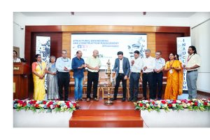
Keynote sessions during the main conference delivered strategic insights into:
- “Leveraging BIM and Digital Twins for Deconstruction: Strategies for Preparation and Optimization” by Dr. Rahimi A. Rahman.
- “Assessment of Climate Change Impacts on Hydrological Extremes” by Dr. Chithra N. R..
- “Subsurface Surprises Through Integrated Investigation for Structural Design” by Prof. P. Anbazhagan.
Keynote sessions explored BIM, climate impacts, and subsurface investigation. Out of 345 abstracts, 120 papers were selected through a double-blind review process. Selected papers will be published in Springer Nature’s Scopus-indexed Lecture Notes in Civil Engineering, with all publication expenses sponsored.
Award highlights included:
- Abu Faiz Memorial Award for Best Paper in Sustainability: Sarath M B & Kiran Babu A R
- Best Paper Award: Risath Athamlebbe & Dr. Rahimi A. Rahman
Pre-conference events like #SECON25JigSaw1.0 and a technical talk by Dr. Katta Venkataramana enriched the academic experience.
SECON’25 affirmed FISAT’s commitment to fostering sustainable innovation, digital advancement, and global collaboration in civil engineering.
Fifth International Conference on Structural Engineering and Construction Management SECON’24
The fifth international conference on structural engineering and construction management SECON’24, organized by the Department of Civil Engineering, Federal Institute of Science and Technology was held on 5th to 7th June 2024. The conference was inaugurated by Er.Cornelis Alan Bueke, Consultant, Stereogram IBT, India. The inauguration ceremony was presided by Mr Shimith P R, Chairman of governing body of FISAT and was graced with the presence of Dr. Rahimi A Rahman, Associate Professor, Construction Project Management, Univeristy Malaysia Pahang Al-Sultan Abdullah (UMPSA), Dr. Ananadh K.S, Department of Civil Engineering, SRM Institute of Science and Technology (SRMIST), Kattankulathur Campus, Kancheepuram, Tamil Nadu. Dr. Jiji Antony HoD, Department of Civil Engineering, FISAT gave the welcome address to all dignitaries on and off the dais, authors and students. Theme of this year’s conference was introduced by Mr. Sreerath S, Convenor, SECON’24.
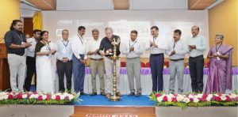
Dr Jacob Thomas V, Principal FISAT, Dr P R Mini Vice Principal FISAT, and members of Professional bodies like Dr. Vijayakumar K, Chairman, ISTE Kerala Section, Er. K.S Babu, FIE, Past Hon. Secretary & Executive Member. IEI Kochi Local Centre, Dr. Anil Joseph, Chairman, ICI Kochi Centre, Mr. Saijan Kuriakose, Chairman, Angamaly Centre, BAI, Mr. Shyamkumar B, Director, QuadLync and Mr. Jenib J Kachappilly, Treasurer, Governing Body, FISAT gave felicitations for the event. Mr. Jawahar Saud S, Convenor, SECON’24 proposed the vote of thanks.
Around 440 abstract submissions and 207 full paper submissions were received for the conference out of the which selected 97 papers were presented over the three-day conference in 20 different parallel sessions and would be published in Lecture Notes in Civil Engineering (LNCE), a Scopus indexed publication of Springer Nature, Switzerland. This year, a total of 19 international papers were accepted and presentations were scheduled for authors from Universities and Industries from Malaysia, Indonesia, UAE, Morocco, USA and France. The conference was a huge success and has laid a road map for a much larger landscape for the next edition in 2025.
Fourth International Conference on Structural Engineering and Construction Management SECON’23
The fourth international conference on structural engineering and construction management SECON’23, organized by the Department of Civil Engineering, Federal Institute of Science and Technology was held on 7th to 9th June 2023. The conference was inaugurated by Dr Albert Thomas, Assistant Professor, Construction Technology and Management, Department of Civil Engineering, IIT Bombay on 7th June. The inauguration ceremony was presided by Mr Shimith P R, Chairman of governing body of FISAT. The event was graced with the presence of Mr Sachin Jacob Paul, Vice Chairman of governing body of FISAT, Principal Dr Manoj George, Vice Principal, Dr P R Mini, Head of the Department. Dr. Jiji Antony and members of Professional bodies like Dr. Vijayakumar K, Chairman, ISTE Kerala Section, Er. P A Salahudheen FIE, Chairman, IEI Kochi Local Centre, Dr. Elson John, Vice Chairman, ICI Kochi Centre, Er. Jolly Varghese, State Chairman, BAI. Around 400 abstract submissions and 150 full paper submissions were received for the conference. From which selected 94 papers presented in the three day conference in 5 different parallel sessions and published in Lecture Notes in Civil Engineering, Scopus indexed springer publications.
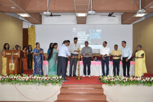
Five keynote sessions by eminent speakers across the globe catalyzed the glory of the conference. Dr. Albert Thomas Assistant Professor, Department of Civil Engineering IIT Bombay presented the topic Academia and Industry collaboration towards Sustainable construction. Dr R Sathish Kumar Professor and Dean School of Construction and Technology, NICMAR, Hyderabad delivered a keynote on Green building concepts and Sustainable construction practices. Prof. Moncef L. Nehdi Professor and Chair Department of Civil Engineering, McMaster University, Canada discussed the topic “Doing it right when no one is looking” : Needed paradigm shifts for sustainability and quality in construction. Dr Sharath S Assistant Professor, Faculty of Engineering, Institute of Ocean Energy, Saga University, Japan presented Emerging Technologies in Ocean Renewable Energy – Towards a Carbon Free Society. Prof Mohammad Najafi Director – Centre for Underground Infrastructure Research and Education & Dr. Vinayak Kaushal Assistant Professor of Instruction Department of Civil Engineering The University of Texas at Arlington, Texas, USA delivered a lecture on Environmental Impact Assessment of Trenchless Cured-in-Place Pipe Renewal Method for Sanitary Sewer Applications. The conference ended with a valedictory function on 9th June. Along with the FISAT team, the presence of session chairs and authors makes the programme a special one.
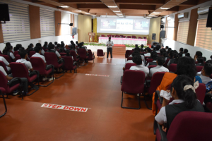
The paper id 201 Experimental Evaluation of Structural Properties of Circular Scrap Tyre Pad (CSTP) Base Isolator authored by Asif Basheer and Ancy Mathew and paper id 254 Characterisation of Pyro-oil Modified EVA and SBS Bitumen using Variation in MSCR Test authored by Nikita Bhagat were selected as best papers in the conference
Third International Conference on Structural Engineering and Construction Management SECON’22 (1-3 June 2022)
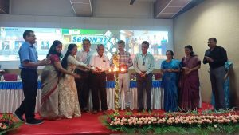
SECON’22, is the Sixth Edition of the Annual Conference and the 3rd International Conference, organized by the Department of Civil Engineering, Federal Institute of Science and Technology (FISAT), Kochi, India. The 3 day conference was held from 1st to 3rd June 2022. The conference emphasized on the main theme “Green Technology and Infrastructure Developments” along with the ten tracks, which discuss the advancements and innovations in various streams of Civil Engineering. The conference intends to become a platform for researchers to present, discuss and bring out the outcomes of the research and developments in the broad domain of Civil Engineering with focus on nature’s sustainability and the development of infrastructure. SECON’22 was a hybrid conference enabling participation of all delegates around the globe.
The conference was organized in association with Springer publications, ISTE Kerala Section, ICI Kochi Chapter, IEI Kochi Chapter, ASCE FISAT Chapter and Paradigm, Kochi.
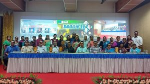
The inauguration of the three days conference was be held at 9.30 am on 01.06.2022 at seminar hall, FISAT. Dr. jiji Antony, Hod Civil & General Convenor SECON 2022 welcomed the gathering. The conference was inaugurated by Mr. Shimith P R , Chairman FISAT. Dr. Manoj George, Principal, FISAT Principal presided over the function. Prof. Jaya Kumari.V , Professor in Civil Engg. (Retd), ISTE Kerala Section Managing Committee Member, Er. P A Salahudheen FIE, Chairman, IEI Kochi Local Centre, Dr. Anil Joseph, President, ICI Kochi Chapter, Dr. C Sheela , Vice Principal, FISAT and Dr. Mini P R, Dean, FISAT shared their felicitations during the inaugural function. Ms. Preethi M, convenor introduced the themes of the conference and Dr. Unni Kartha G, co-convenor, proposed the vote of Thanks.
There were 5 keynote lectures by eminent personalities around the world and 100 paper presentations in 4 parallel sessions during these three days.
The keynote speakers were :
(i) Prof. Shahria Alam, Professor, Civil Engineering, School of Engineering, The University of British Columbia, Canada
(ii) Prof. Alessandro Palermo, Professor in Structural Engineering and Materials, Department of Civil and Natural Resources Engineering, University of Canterbury, Christchurch, New Zealand.
(iii) Prof. Moncef L. Nehdi, Professor and Chair Department of Civil Engineering, McMaster University, Canada
(iv) Dr. MO Kim Hung, Senior Lecturer, Department of Civil Engineering, Faculty of Engineering, University of Malaya, Kuala Lumpur, Malaysia.
(v) Dr. Piyush Chaunsali, Assistant Professor, Building Technology and Construction Management Division, Department of Civil Engineering, Indian Institute of Technology, Madras.
Web :https://sites.google.com/fisat.ac.in/secon-22?pli=1
Second International Conference on Structural Engineering and Construction Management SECON’21 (12th to 15th May 2021)
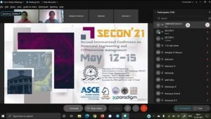
The second edition of International Conference on Structural Engineering and Construction Management – SECON’21 organised by the Department of Civil Engineering, Federal Institute of Science and Technology, Angamaly, Kerala was held on 12 -15th May 2021. The main theme of the conference was “Computational Techniques in Civil Engineering and Infrastructure Management”. The four days conference was arranged in association with American Society of Civil Engineers, Institution of Engineers – IEI Kochi Chapter, ISTE, ICI Kochi Chapter and Paradigm IT Pvt. Ltd., Kochi, the industry partner. The conference was inaugurated by Dr. Anitha P, Chairman, Governing Body, Federal Institute of Science and Technology. Dr. George Issac, Principal presided over the function. Dr. Unni Kartha G, Head of the department welcomed the gathering. Er. Poloju Narasimha Chay, President ASCE India Section Southern region, Dr. K Vijakumar, Chairman ISTE Kerala Section, Er. Shaji Jacob, Chief Academic Coordinator IEI Kochi Chapter, Mr M A Joseph, Chairman ICI Kochi chapter and Dr. C Sheela, Vice Principal , FISAT shared their felicitations during the inaugural function. Ms. Rajalakshi T R, convenor introduced the themes of the conference and Ms Reshma Prasad, convenor, proposed the vote of Thanks. The highlight of the conference was the keynote lectures by International speakers. The Keynote speakers were
1.Dr. Mohammad Najafi, Director – Centre for Underground Infrastructure Research and Education, The University of Texas at Arlington, Texas, USA
2.Prof. Giuseppe Carlo MARANO, Deputy Director , Department of Structural, Geotechnical and Building Engineering, Politecnico di Torino – Italy
3.Prof. Ir.Ing Serge Vandemeulebroecke, Visiting Professor, University of Antwerp, Belgium
4.Dr. Arjun Jayaprakash, Senior Earthquake Engineer, Karen Clark and Company, Boston, Massachusetts
5.Prof. Ranjith Dissanayake, Senior Professor, University of Peradeniya, Sri Lanka
6.Prof. Usama Ebead, Professor of Structural Engineering , Qatar University.
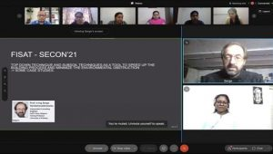
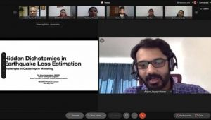
The overwhelming response to SECON21 flagged way to nearly 400 submissions, from premier institutes in the country such as IITs, NITs, and other Universities. The papers were peer reviewed by a reviewer team which was composed of 100+ Academicians with PhD as well as Industry. 100 papers from 43 institutions which include 8 papers from IITs, 20 from NITs and 4 papers with foreign collaborations are published by Springer in the Scopus indexed book seires “Lecture Notes in Civil Engineering”. The papers selected for publication were presented in 27 sessions over the 4 days. The best paper awards were announced during the valedictory session held on 15th May.
Web: https://secon21.fisat.ac.in
Proceedings: https://www.springer.com/gp/book/9783030803117
First international Conference on Structural Engineering and Construction Management SECON 2020 (14th to 15th May 2020)
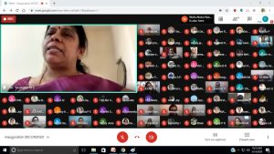
The International Conference on Structural Engineering and Construction Management was conducted on the 14th and 15th of May 2020. The theme of the conference was “Innovative Practices in Construction, Rehabilitation and Demolition of Structures” and had seven sub themes through which a wide range of issues were discussed in the conference. Dr. Rajashree M S, Honorable Vice CHancellor of APJ Abdul Kalam Technological University inaugurated the conference. Two keynote lectures were presented by Prof. Ir.Ing Serge Vandemeulebroecke, Visiting Professor, University of Antwerp, Belgium and Prof. Ir.Lic.Bart Van Zegbroeck, Visiting Professor, University of Hasselt, Belgium during the inaugural function. The conference was conducted in association with ASCE, ICI, IEI and Paradigm Consultants Pvt. Ltd. A total of 315 submissions were received from across the country and abroad of which 160 were shortlisted and 85 were accepted for presentation and publication after intrinsic reviewing and plagiarism check. The proceedings are publshed by Springer in Lecture notes in Civil Engineering.
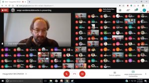
Dr. Kavitha P E and Mr. Jawahar Saud S were the conveners of the event. Owing to the COVID-19 Pandemic, the conference was completely hosted on the online platform Google Meet. The team effort of the faculty in planning and coordinating the event completely was widely appreciated by the chairs, authors and participants. They also positively commented on the initiative taken by the department for hosting the event online.
Web: https://secon2020.fisat.ac.in
Proceedings: https://www.springer.com/gp/book/9783030551148
Third National Conference on Structural Engineering and Construction Management – SECON’2019 (15th to 16th May 2019)
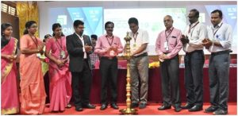
SECON’2019 was conducted association with ICI Kochi Chapter, IEI Kochi Centre and ISTE. The two-day conference was held on 15th and 16th of May 2019. The inaugural event was graced by the esteemed presence of two eminent personalities, Dr. Radhakrishna G. Pillai, Associate, Professor, Department of Civil Engineering, IIT Madras, who inaugurated the Conference and by the Guest of honour Er. C. Prathapmohan Nair, trained civil engineer and urban planner, certified PPP specialist and UNECE enlisted PPP advisor, member of the royal institute of chartered surveyors who released the conference proceedings. The themes of the conference was presented by Ms. Asha Joseph, Convener, SECON’19 and the inaugural function was concluded by a vote of thanks, proposed by Dr. Kavitha P. E.
The two day session comprised of the keynote addresses by some of the most eminent personalities such as Dr. Radhakrishna G. Pillai ,Er. C. Prathapmohan Nair, Dr. Sudheesh T.K., Assistant Professor, IIT Palakkad, Dr Sunil Kumar N., Principal, Cochin University College of Engineering, Kuttanad, Dr. Job Thomas, Professor, CUSAT, Kochi and Dr. Sajith A.S., Associate Professor, NIT, Calicut. A total of 63 papers were presented during the two day session across various venues. The proceedings was published in Scopus Indexed Springer publication – ‘Lecture Notes in Civil Engineering’
Web: https://secon19.fisat.ac.in
Proceedings: https://www.springer.com/gp/book/9783030263645
Second National Conference in Structural Engineering and Construction Management, SECON’18 (17th to 18th April 2018)
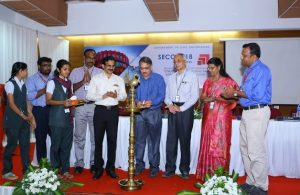
The Second National Conference in Structural Engineering and Construction Management was organized during 17th and 18th of April 2018. The conference consisted of seven sessions over two days. A panel of twelve experts including Dr. Katta Venkataramana, Dr Kavitha P E, Dr. Praseeda K I, Dr. C Justin Jose, Dr Vinay Mathews, Dr. Sunitha K Nair, Dr Abhay Shankar, Ds Deepa G Nair, Dr Vasudev R, Mr Elson John, Mr Shyju P Thadathil and Dr Aysha Zaneeb reviewed and chaired the sessions. There were 57 papers and the proceedings were published with ISBN Number 978-93-5311-002-4
Web: https://sites.google.com/fisat.ac.in/secon18/
First National Conference in Structural Engineering and Management, SECON’17 (3rd and 4th March 2017)
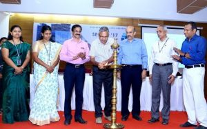
The First National Conference in Structural Engineering and Management, organized by the Department of Civil Engineering during 3rd and 4th March 2017. The theme of the conference was broadly divided under two heads viz. Structural Engineering and Construction Management. The conference consisted of three sessions spanned over two days. The first and second session were devoted to Structural Engineering and was chaired by Dr. Job Thomas, Professor, CUSAT and Dr. Sajith A S, Associate Professor, NIT Calicut. The third session was devoted to Construction Management and was chaired by Mr. Shibi Varghese, Professor, MACE, Kothamangalam. There were 26 papers and the proceedings were published with ISBN Number 978-93-5268-714-5.
Web: http://secon17.fisat.ac.in/
National Conference on Alternate Building Materials and Construction Practices, NABCP’15 (18th September)
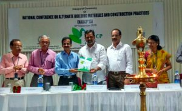
The National Conference on Alternate Building Materials and Construction Practices, NABCP’15 was held on 18th September, 2015. There were 38 delegates from different colleges and the proceedings carried 19 research papers. The conference was inaugurated by Mr. Shreeganesh V. Nair, GRIHA Trainer and Evaluator, GTCS and there were 3 key note speakers. This was the first ever National Conference organised by the department. Dr. Anoop C K was the convenor and Ms. Rinu J Achison was the Co-convenor. The conference was supported by ICI, FISAT Management and also PTA. The proceedings were published with an ISBN Number.
Web: https://sites.google.com/a/fisat.ac.in/civilconference2015/